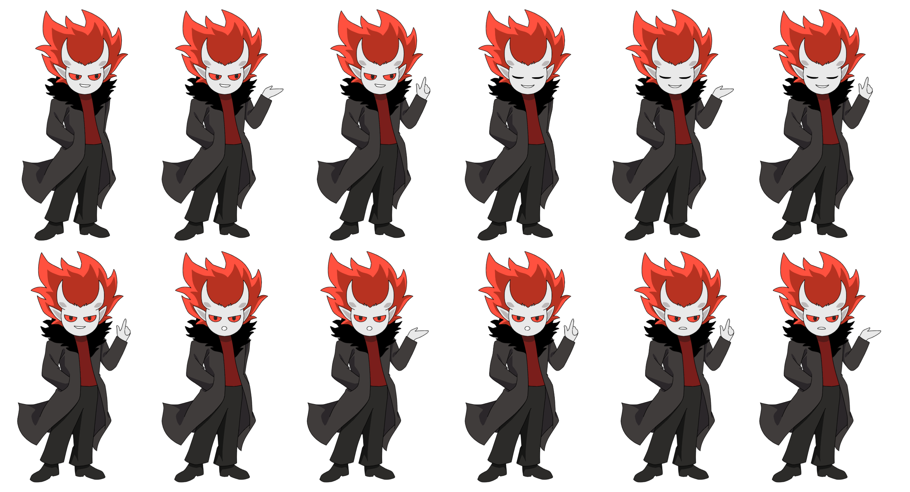
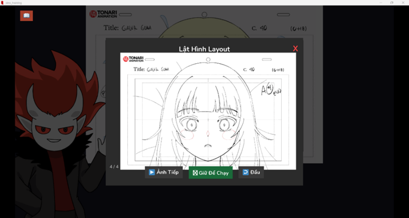
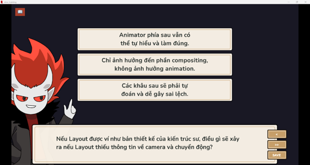
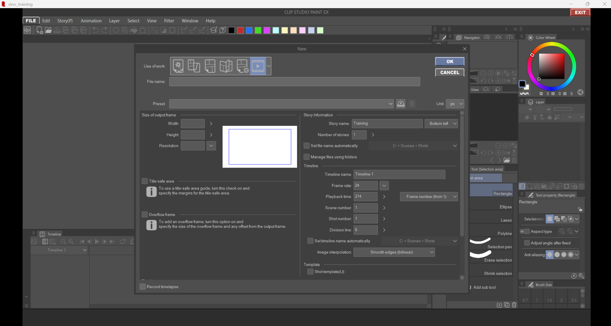
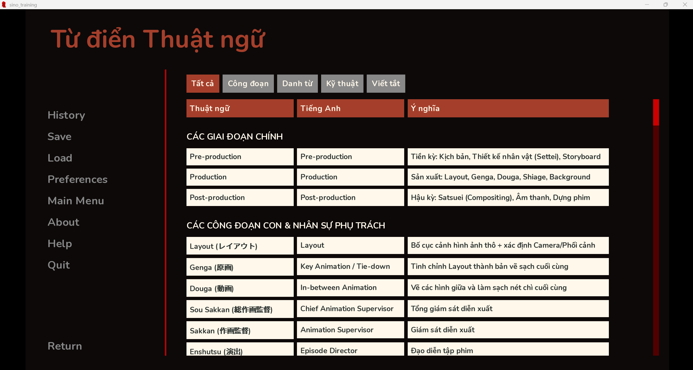

◆ CHAPTER 01
Gamify the onboarding process.
DIFFICULTY
★★★★★
PARTY SIZE
Solo IDer
DURATION
5 months
STATUS
● Testing
◆ MISSION BRIEFING - THE PROBLEM
Sino Studio chose to follow the Japanese animation pipeline - but most of its in-house animators had only ever learned about it informally.
Vietnam has no school that teaches industry-level animation. So Sino Studio's process was something they accumulated themselves. Without predecessors to guide them, their workflow became a chaotic blend of Western and Japanese pipelines, learned inconsistently across the team. The resulted in a cascade of problems: improper techniques, incorrect line weight, inaccurate colors, and constant rework. Costing studio time and money.
⚠ ACTIVE DEBUFFS ON PARTY
DEBUFF · 01
No formal training infrastructure or dedicated trainer.
DEBUFF · 02
Pipeline terminology fragmented across three languages.
DEBUFF · 03
Zero budget allocated for the onboarding process.
◆ STRATEGY - THE SOLUTION
CHOSEN APPROACH
I designed a fully virtual, interactive onboarding module using a Visual Novel format.
This game-based format provides an intuitive interface for the target demographic of young, tech-savvy animators. The training clarifies specific pipeline roles, standardizes terminology, and requires learners to accurately apply software settings.
✦ BUFFS GAINED
3 branching learning paths
Zero-cost engine (Ren'Py)
In-engine CSP simulation
Cert-gated 80% pass rule
◆ DUNGEON MAP - MY PROCESS
5 STAGES · ALL CLEARED
Used ADDIE models to create a gamified experience.
i
STAGE 01
Analysis
Identified workflow gaps
ii
STAGE 02
Design
Action maps & storyboards
iii
ACTIVE STAGE
Development
Building UI in Ren'Py
PLANNED
Implementation
Pilot Rollout
⚔ BOSS · PLANNED
Evaluation
Summative Review
i
STAGE 01 · ANALYSIS
Identifying observable behaviors.
Before writing a single line of content, I conducted a task analysis to map the training to specific actions animators would perform on the job. Every lesson had to trace back to something observable.


+50 XP · STAGE CLEARED
ii
STAGE 02 · DESIGN
Mapping the architecture.
◆ LEARNING OBJECTIVES
Overall goal: Standardize the studio’s production output to meet both Japanese industry standards and Sino Studio’s specific needs.
By the end of the training, learners will be able to:
- Identify the specific roles of LO, Genga, and Douga within the pipeline and the unique delivery requirements for each.
- Apply all the studio specific environmental settings in Clip Studio Paint to ensure asset portability between animators.
- Apply mandatory color-trace lines (Red/Blue/Green) to Genga layers to facilitate the Shiage (Painting) process.
- Read and write annotations on the timesheet and animation frames.
◆ CONTENT STRUCTURE
In Sino Studio, each animator is in charge of 1 to 2 animation processes (Layout, Genga, Douga, Shiage).
This training is designed so that learners can choose the learning path and lessons that are most relevant to their work to speed up the onboarding process.

+ VIEW LEARNING PATHS DETAILS
1) Introduction to Japanese Animation Pipeline
• Lesson 1: General Anime Production Pipeline
• Lesson 2: Detailed Breakdown of the Layout Stage
• Lesson 3: Detailed Breakdown of the Genga Stage
• Lesson 4: Detailed Breakdown of the Douga Stage
• Lesson 5: Detailed Breakdown of the Shiage Stage
• Lesson 2: Detailed Breakdown of the Layout Stage
• Lesson 3: Detailed Breakdown of the Genga Stage
• Lesson 4: Detailed Breakdown of the Douga Stage
• Lesson 5: Detailed Breakdown of the Shiage Stage
2) Introduction to Sino Studio Animation Pipeline
• Lesson 1: General Sino Studio Anime Production Pipeline
• Lesson 2: Mandatory Technical Standards
• Lesson 3: Delivery Protocols, and Storage Management
• Lesson 2: Mandatory Technical Standards
• Lesson 3: Delivery Protocols, and Storage Management
3) Review by Topics (focus only on main points)
• Layout / Genga / Douga / Shiage
• Sino Studio Work (Pipeline, Technical Standards, Storage Management)
• Sino Studio Work (Pipeline, Technical Standards, Storage Management)
Complete beginners or animators new to the Japanese industry will start with Option 1 to learn the basics of Japanese animation pipeline, then they will move to Option 2 to learn Sino Studio’s workflow.
Experienced animators who only need the studio‑specific pipeline can go directly to Option 2. All animators must complete Option 2 to receive a certificate before starting work. Option 3 is for current animators who only need to review specific topics or requirements.

Choosing learning path in real training using Ren’py as the Visual novel engine.
◆ ASSESSMENT STRATEGY
Assessments were designed to include formative questions with immediate feedback after each key point, followed by a final workflow simulation at the end of the module.
+ VIEW ASSESSMENT DETAILS
Formative checks in each section
The trainer asks a knowledge or scenario question after each key point. Learners receive immediate feedback and must reselect until they choose the correct answer.

Final workflow simulation
Learners complete a task that mimics the real Clip Studio Paint work environment, from receiving a cut folder to submitting the final product.

- First run: guided practice with trainer prompts and corrective feedback.
- Second run: independent completion. Learners must score above 80% to pass.
- If they fail, they can redo the guided run or retry the independent run.
- Successful learners receive a completion certificate.

Pre- and post-surveys
Used only with beta testers to measure perceived learning.
Optional interviews
Gather deeper insights from beta testers about confusing sections or unclear terminology.
These assessments help identify what needs refinement before full implementation.
+50 XP · STAGE CLEARED
⚔ NOW BUILDING
iii
STAGE 03 · DEVELOPMENT
Coding the environment.
◆ AUTHORING TOOLS
The training was built using Ren'Py, a free visual novel engine that accommodates zero-budget constraints while supporting custom coding for a simulated work environment.
◆ MULTIMEDIA & INTERACTIVE CONTENT
The training is built as a visual novel with the following integrated components:
VISUAL ELEMENTS
- Trainer avatar with multiple poses and emotions.
- Step-by-step visualizations of processes.
- Flipbook viewer for GIF-like animation previews.

Different hand-drawn trainer (director avatar) poses and emotions

Flipbook component that functions like both a GIF and a series of pictures
INTERACTIVE & GAME FUNCTIONS
- Choice boxes for learner-trainer interaction.
- Game functions: save, load, back, skip (local storage).
- Interactive simulations of the CSP software.

Choice boxes to simulate a conversation between the trainer and the learner

Game function components

Simulation of the Clip Studio Paint work environment using series of pictures and clickable button
SUPPORT & ACCESSIBILITY
- Built-in dictionary of Japanese terms (EN/VN).
- Contrast-checked 4-color palette (Coolors).
- WAVE tool audit for accessibility compliance.

Dictionary with Japanese terms, equivalent English term, and meaning in Vietnamese
+100 XP · MISSION IN PROGRESS
STAGE 04 · IMPLEMENTATION
The rollout strategy.
◆ HOSTING
The program is designed to be lightweight in memory usage so it can eventually be hosted directly on the studio’s main website.
◆ ACCESSIBILITY
Prior to full deployment, the WAVE Web Accessibility Evaluation Tool will be used to assess the training for accessibility compliance.
◇ UPCOMING PHASE
STAGE 05 · EVALUATION
Measuring the impact.
◆ EVALUATION PLAN
A two-tiered evaluation strategy focusing on beta-tester reaction and long-term workplace results.
+ VIEW EVALUATION DETAILS
Level 1 – Reaction (Beta Testing Phase)
I will recruit beta testers from diverse backgrounds within the target audience to collect data on:
- Overall satisfaction with the training format.
- Technical terminology that remains unclear.
- Simulation completion rate on the first attempt.
- Sections identified as difficult or confusing.
Level 4 – Results (Post Implementation)
After publication, workplace performance data will be tracked to analyze impact:
- Compare production mistakes before vs. 3 months after training.
- Survey editors and composers on workload improvements.
- Analyze reductions in rework and overall efficiency gains.
If effective, this data will justify additional studio workflow projects. If not, it will guide iterative revisions.
+400 XP · BOSS DEFEATED
★ ★ ★ LEGENDARY LOOT ★ ★ ★
Planned Outcomes - The Vision
A reusable, self-paced onboarding system that any new hire at Sino Studio can complete independently - built on a free engine, with a built-in certificate gate before they touch live production.
◆ TOTAL XP EARNED400 / 1,600